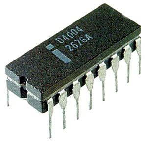
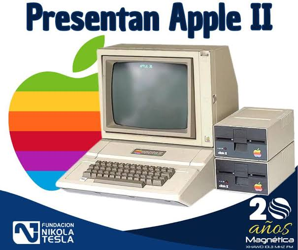
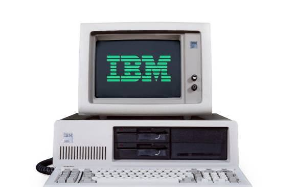
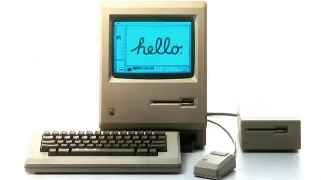
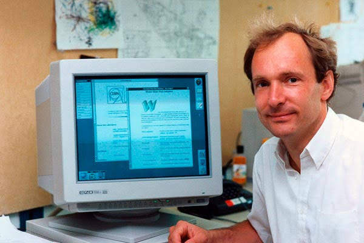
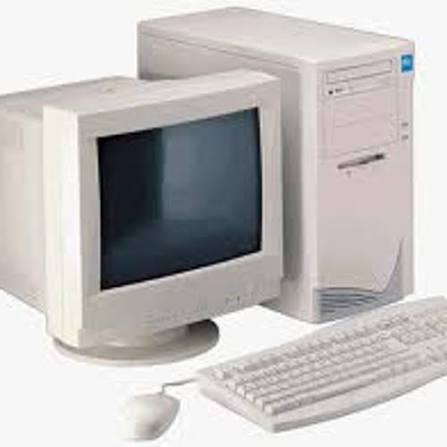

CUARTA GENERACION DE COMPUTADORAS (1971 - DECADA DE 1990 / PRESENTE) - Estudio historico y tecnico riguroso sobre la invencion del microprocesador, la integracion a escala muy grande (VLSI), la revolucion de las computadoras personales, las interfaces graficas de usuario (GUI), el sistema operativo MS-DOS y la explosion de la World Wide Web.

1. Que fue la Cuarta Generacion y su Detonante Tecnologico - La cuarta generacion de computadoras inicio formalmente en 1971, determinada por el dominio de la integracion a gran escala (LSI) y a muy gran escala (VLSI): procesos de microfabricacion planar que permitieron condensar primero decenas de miles y luego millones de transistores microscopicos sobre una pastilla monolitica de silicio de pocos milimetros cuadrados. Este increible grado de miniaturizacion logro reunir por primera vez todos los componentes constitutivos de una Unidad Central de Procesamiento (CPU) -la unidad aritmetico-logica, los registros internos de acumulacion, los decodificadores de instrucciones y la unidad de control- en un solo chip integrado: el microprocesador. La llegada del microprocesador transformo la computacion en un fenomeno de masas, pasando de enormes gabinetes centralizados accesibles solo para instituciones a computadoras personales compactas, potentes y economicas integradas en escuelas, pequenas oficinas y hogares en todo el mundo.
2. El Intel 4004 y la Evolucion de los Primeros Microprocesadores - El punto de partida ocurrio el 15 de noviembre de 1971, cuando la corporacion Intel anuncio comercialmente el Intel 4004. Concebido originalmente como parte de un encargo para optimizar la circuiteria de doce chips de calculadoras para la empresa japonesa Busicom, fue disenado por un equipo formado por el fisico e ingeniero italiano Federico Faggin (quien creo la metodologia de compuerta de silicio con transistores pMOS y trazo fisicamente el silicio), Marcian Ted Hoff, Stanley Mazor y el ingeniero japones Masatoshi Shima. El Intel 4004 fue un microprocesador monolitico de 4 bits con 2.300 transistores en un encapsulado ceramico de 16 pines, capaz de ejecutar sesenta mil operaciones por segundo a 740 kHz. Este hito abrio el camino a una rapida sucesion de procesadores legendarios: el Intel 8008 de 8 bits en 1972 y el fundamental Intel 8080 en abril de 1974 (con 4.500 transistores a 2 MHz y direccionamiento de 64 kilobytes de memoria). En 1975, Chuck Peddle y su equipo en MOS Technology disenaron el MOS 6502, un procesador de 8 bits vendido por solo 25 dolares (frente a los varios cientos de dolares de sus competidores): este chip ultraeconomico democratizo la industria y motorizo el Apple I, Apple II, Commodore PET, Commodore 64, Atari y la consola Nintendo Famicom/NES. En julio de 1976, Federico Faggin y Masatoshi Shima fundaron Zilog y lanzaron el Zilog Z80, un procesador compatible con el 8080 pero con frecuencia de 3,5 MHz y refresco automatico de memoria DRAM que impulso al Sinclair ZX Spectrum y al estandar MSX. Por ultimo, en 1979 Motorola presento el Motorola 68000, un potente procesador de 68.000 transistores con registros de 32 bits y bus externo de 16 bits que motorizaria el Apple Macintosh, Commodore Amiga, Atari ST y estaciones de trabajo profesionales de Sun Microsystems.

3. El Nacimiento de las Microcomputadoras y las Computadoras Personales (PC) - En enero de 1975, la revista Popular Electronics presento en portada el MITS Altair 8800, una microcomputadora en kit basada en el chip Intel 8080 disenada por Ed Roberts en Albuquerque (Nuevo Mexico) con el bus S-100: carecia de teclado y monitor, pero demostro que cualquier aficionado podia armar su propia computadora en casa; dos jovenes universitarios, Bill Gates y Paul Allen, escribieron un interprete del lenguaje BASIC simulando el 8080 en un computador PDP-10, vendieron su software a MITS y fundaron Micro-Soft. En Silicon Valley surgio el Homebrew Computer Club en marzo de 1975, donde Steve Wozniak diseno la placa base del Apple I, ensamblada a mano por Steve Jobs y vendida en la tienda Byte Shop. En 1977 nacio la trinidad de las microcomputadoras comerciales completas listas para encender al sacarlas de la caja: el Apple II (presentado en abril de 1977 en la West Coast Computer Faire, provisto de chasis de plastico moldeado, teclado integrado, fuente de alimentacion conmutada de Rod Holt, ranuras de expansion y graficos a color en monitor o televisor; para el cual Dan Bricklin y Bob Frankston crearon en 1979 la hoja de calculo VisiCalc, la primera aplicacion de negocios imprescindible que demostro que las microcomputadoras eran herramientas financieras vitales); el Commodore PET 2001 con monitor y casete integrados; y el Tandy TRS-80 vendido por la cadena RadioShack. En agosto de 1982 salio al mercado el celebre Commodore 64 bajo el lema de Jack Tramiel (Computadoras para las masas, no para las clases): provisto de 64 KB de RAM, el chip grafico VIC-II y el chip sintetizador de sonido SID 6581 de Robert Yannes, vendio cerca de diecisiete millones de unidades en todo el mundo, convirtiendose en el computador individual mas vendido en toda la historia de la tecnologia.

4. El IBM PC 5150 y el Estandar Mundial de la Arquitectura Abierta - El 12 de agosto de 1981, International Business Machines (IBM) presento en Nueva York el IBM PC (modelo 5150), desarrollado bajo el nombre en clave Proyecto Ajedrez en tiempo record de un ano por un equipo de doce ingenieros en Boca Raton (Florida) liderado por Philip Don Estridge. Rompiendo con la tradicion de fabricar sistemas cerrados y propietarios, IBM adopto una arquitectura abierta con componentes comerciales estandar de mercado: utilizo el microprocesador Intel 8088 de 16 bits (con bus de datos externo de 8 bits) a una frecuencia de 4,77 MHz, ranuras de expansion ISA de 8 bits y licencio el sistema operativo de disco de Microsoft, denominado PC-DOS / MS-DOS. La publicacion abierta de los diagramas tecnicos de circuitos y del manual con el codigo del BIOS permitio que otras empresas de ingenieria, comenzando por Compaq en 1982 (fundada por Rod Canion, Jim Harris y Bill Murto), realizaran ingenieria inversa en sala limpia (Clean Room Reverse Engineering) del BIOS de IBM sin violar derechos de autor, lanzando la computadora portatil Compaq Portable en 1983 plenamente compatible. Esto desato la proliferacion de los clones del IBM PC, convirtiendo a la arquitectura x86 de Intel y al software de Microsoft en el estandar dominante e inamovible de la informatica mundial.

5. La Revolucion de la Interfaz Grafica de Usuario (GUI) y el Raton - Antes de los anos ochenta, manejar una computadora implicaba memorizar y teclear codigos complejos en consolas monocolor de linea de comandos (como CP/M o MS-DOS). La revolucion visual se forjo en el centro de investigacion Xerox PARC (Palo Alto Research Center) en California a partir de 1970 con el desarrollo de la computadora Xerox Alto (1973), donde investigadores como Alan Kay, Butler Lampson, Charles Thacker y Adele Goldberg crearon la metafora del escritorio: un entorno visual interactivo donde la pantalla de mapa de bits (bitmapped display) representaba documentos en ventanas superpuestas, iconos graficos, menus desplegables y un puntero controlado por el raton (mouse), invento concebido por Douglas Engelbart en el Instituto de Investigacion de Stanford en 1968 durante la mitica Demostracion Madre de Todas las Demos. Inspirado por una visita a Xerox PARC en 1979, Steve Jobs encabezo el proyecto en Apple: tras la computadora empresarial Apple Lisa en 1983, el 24 de enero de 1984 se presento el historico Apple Macintosh mediante el celebre anuncio televisivo dirigido por Ridley Scott. Con su procesador Motorola 68000, su interfaz grafica intuitiva con papelera y carpetas, disquetes de 3,5 pulgadas de carcasa rigida y el raton de serie, el Macintosh popularizo la autoedicion de escritorio (Desktop Publishing) con programas como Aldus PageMaker e impresoras LaserWriter. Microsoft adopto este paradigma con su entorno grafico Microsoft Windows, que tras versiones tempranas alcanzo el exito comercial con Windows 3.0 y 3.1 (1990-1992) y domino definitivamente el mercado en agosto de 1995 con Windows 95, introduciendo arquitectura protegida de 32 bits, multitarea preferente, compatibilidad plug and play y el menu de inicio.

6. La Red Global: TCP/IP y el Nacimiento de la World Wide Web - El 1 de enero de 1983 (evento conocido como el Flag Day), la red militar y academica ARPANET cambio definitivamente sus antiguos protocolos por la pila de protocolos de comunicacion TCP/IP (Transmission Control Protocol / Internet Protocol), disenados por Vinton Cerf y Robert Kahn, acontecimiento considerado el acta de nacimiento tecnico de Internet. En marzo de 1989, el fisico y cientifico computacional britanico Tim Berners-Lee presento en el centro de fisica nuclear CERN en Ginebra (Suiza) su propuesta Information Management: A Proposal para resolver la fragmentacion documental de los experimentos de altas energias. Para diciembre de 1990, Berners-Lee habia especificado los tres pilares universales de la Web: el protocolo de transferencia de hipertexto (HTTP), el lenguaje de marcado de hipertexto (HTML), y el sistema universal de identificacion y direccionamiento (URL/URI), programando el primer navegador-editor (WorldWideWeb) y el primer servidor web en una estacion de trabajo NeXTcube disenada por Steve Jobs. En 1993, Marc Andreessen y Eric Bina desarrollaron en la Universidad de Illinois el navegador NCSA Mosaic, el primer navegador web multiplataforma capaz de mostrar texto e imagenes juntas en una misma pagina en pantallas Windows, Mac y Unix; al fundar Netscape Communications en 1994 con el lanzamiento de Netscape Navigator, Internet se abrio al publico general, uniendo a cientos de millones de computadoras personales de todo el planeta en una sola red mundial de comunicacion, comercio y conocimiento interactivo.

Jesus Adriel Meza Machado 5DPGM